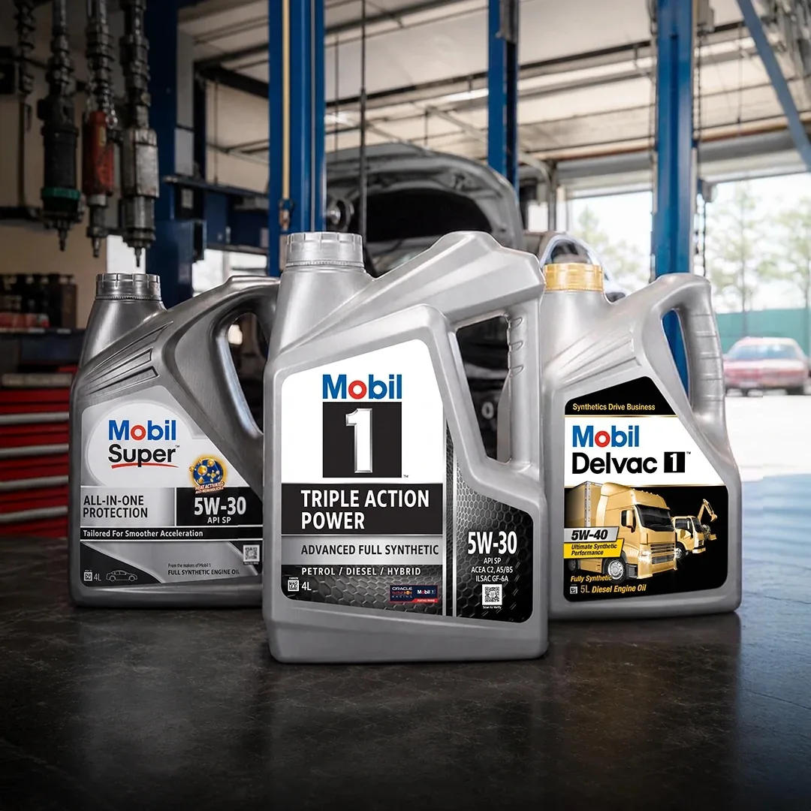
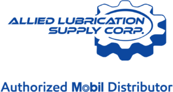

Allied Lubrication Supply Corp. is the authorized distributor of Mobil products in Luzon and Visayas.

Mobil is ExxonMobil’s family of lubricant brands, built on science, research and proven performance.
Mobil 1 was introduced in 1974 as the first globally available full synthetic motor oil. Mobil Delvac has kept trucks and heavy equipment working since 1925. Today the family includes Mobil 1, Mobil Super, Mobil Delvac, and Mobil Super Moto, developed alongside vehicle and engine makers around the world.
Mobil Delvac first registered as a diesel engine lubricant.
Mobil 1 introduced, the first globally available full synthetic motor oil.
of synthetic motor oil science behind Mobil 1.

Allied Lubrication Supply Corp. (ALSC), an affiliate of Juliana Holdings Inc. (JHI), is the authorized distributor of Mobil products to the (B2C) consumer market in Luzon and Visayas in the Philippines.
We distribute premium products: Mobil 1, Mobil Super, Mobil Delvac, and Mobil Super Moto, all of which are designed to meet industry standards and specifications, surpassing rigorous manufacturer approvals to keep engines running like new.
We operate with a team of highly skilled professionals, engineers, business professionals, and sales executives, dedicated to providing exceptional service and support to our customers, ensuring the highest levels of satisfaction and performance to make Mobil available to Filipino consumers.
To be the leading distributor of premium lubricants in the Philippines, recognized for our commitment to excellence, innovation, and sustainability. We aim to set the industry standard for quality and customer satisfaction, driving progress and prosperity for our clients and communities.
To provide the highest quality lubricants and exceptional service to our customers, ensuring optimal performance and longevity for their machinery and vehicles. We are committed to innovation, sustainability, and building lasting relationships with our clients and partners.
538 Jenny’s Avenue, Brgy. Maybunga,
Pasig City 1607, Metro Manila